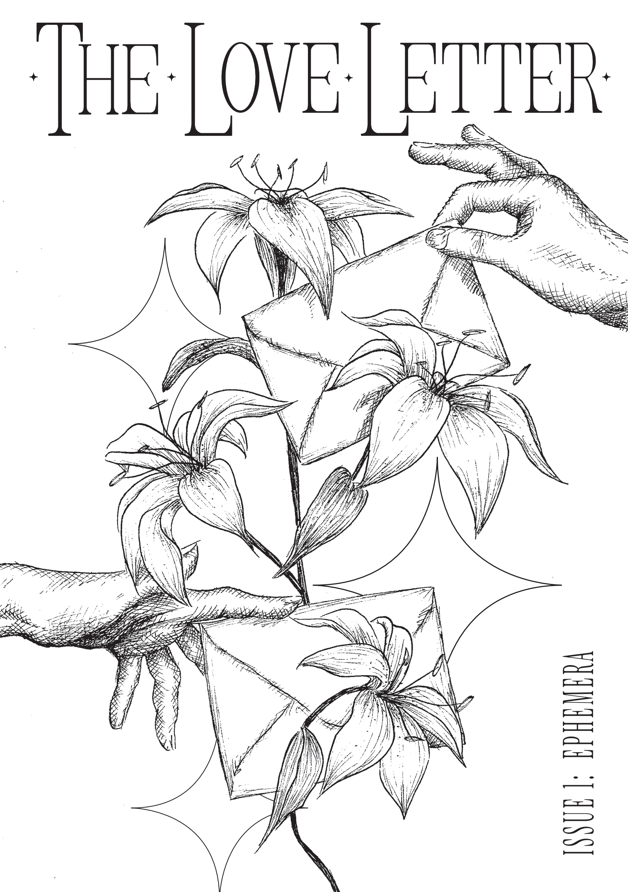
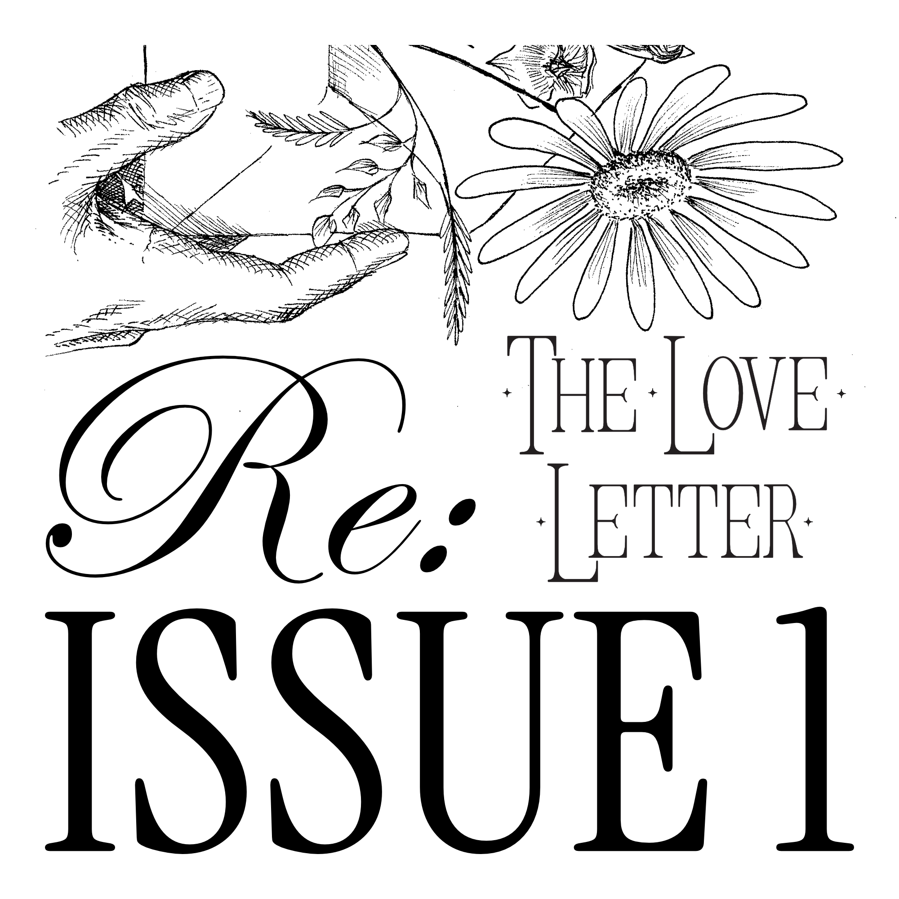

ISSUE 1
EPHEMERA
Natural cycles · short-lived moments · transient memories
The Love Letter magazine began as a correspondence between two lovers. A need for physicality fulfilled by pen and paper. Words extracted from the deepest folds of the heart and extended to the other, exposed and laid bare. The feelings evoked, unravelled and untethered, necessitating an answer, a call, a reply. The works chosen follow this orthodox.
We asked contributors to explore the theme of EPHEMERA. To consider the significance of the short-lived and evanescent. From transient anuses to the ticking of time, from faltering leaves to deep space probes, we hope these reflections of impermanence elicit your own observations on the brief and momentary, and give you new insight into the world that we inhabit and the life that we embody.
RELEASE DATE
9 August 2026
FORMAT
A5 Print, limited first print run (125 copies)
PAGES
56

Re: ISSUE One
Re: ISSUE One is a companion playlist curated by Mun Kang for the debut issue of The Love Letter magazine, available on Spotify, YouTube and Apple Music. Listen while you read, or perhaps after, maybe even before...
-
01
PrologueI Think of You Rosalie Sorrels
-
02
LimerantPhone Call — from "Eternal Sunshine of the Spotless Mind" / Score Jon Brion
-
03
Where the Salt Water Licks Your Wounds#20 Aphex Twin
-
04
VoyagerSvefn-g-englar Sigur Rós
-
05
CempasúchilYou Should Be Hated Here Carissa's Weird
-
06
Sergei Anzac Took One Too Many Hayfever TabletsMonkberry Moon Delight — Remastered 2012 Paul McCartney, Linda McCartney
-
07
Mneompsis LedyeiKOMM, SUSSER TOD — M-10 Director's Edit Version Arianne
-
08
The Suicide of an Academic PostponedWhen It's Cold I'd Like to Die Moby
-
09
Dear SusieLove Songs on the Radio Mojave 3
-
10
The DateSun In My Mouth Björk
-
11
The IroningCloud 9 Aga Ujma
-
12
Keeping SpringDelicious Linda Perhacs
-
13
Philadelphia Love SongAll The Years Beach House
-
14
EpilogueBaby Let Me Hope Sandoval & The Warm Inventions